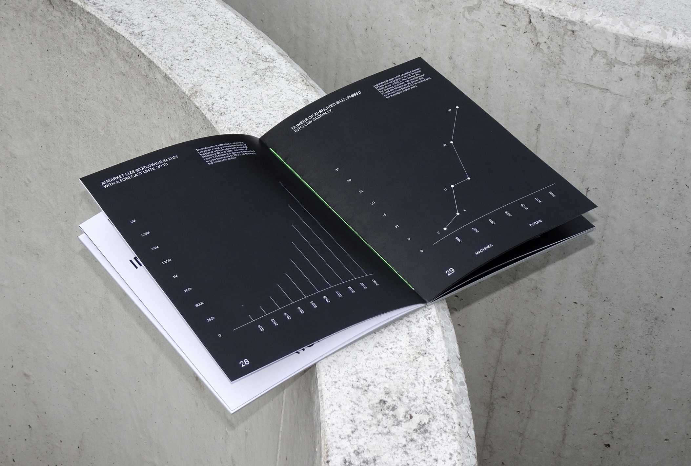
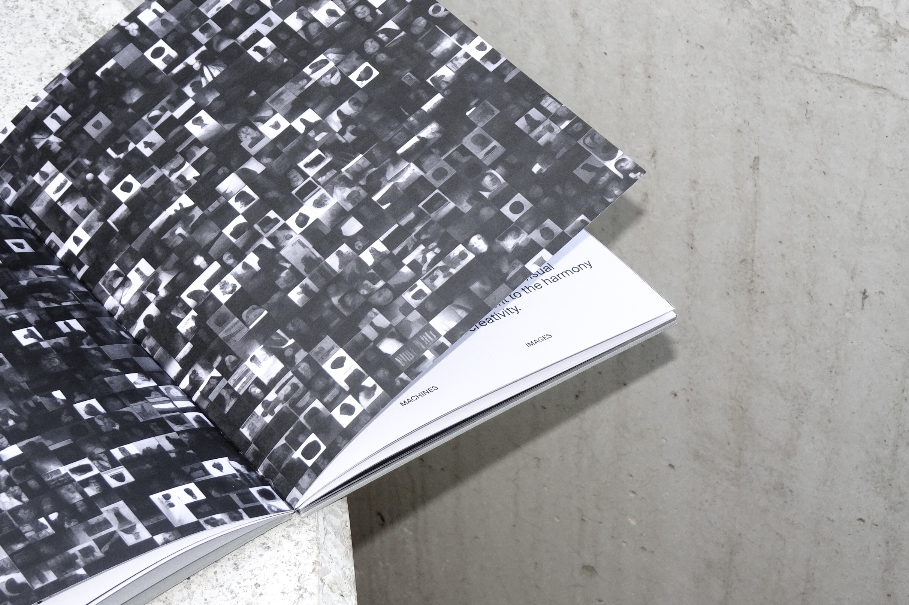
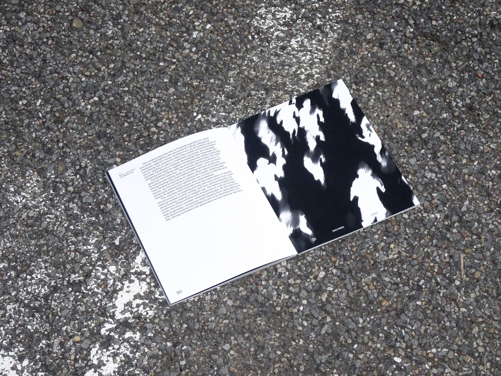
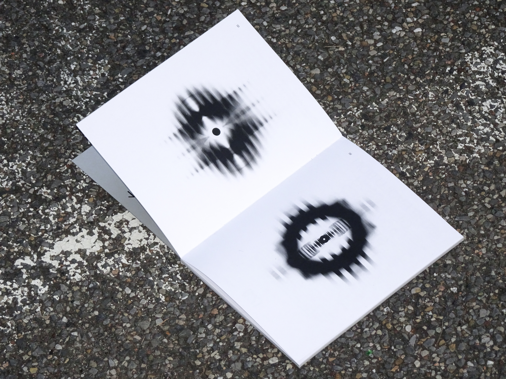
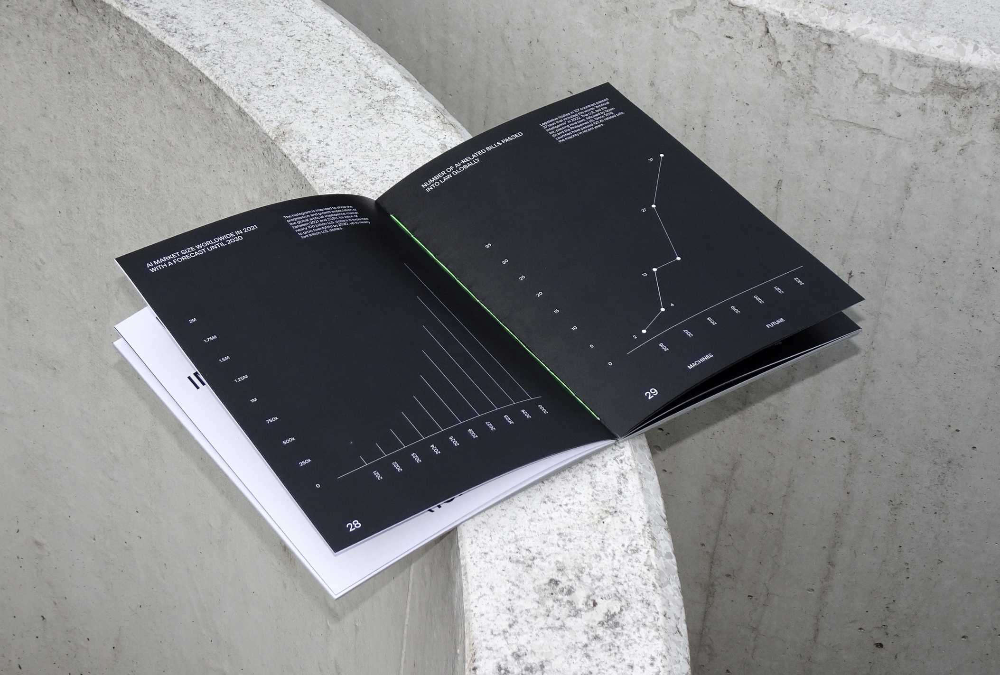
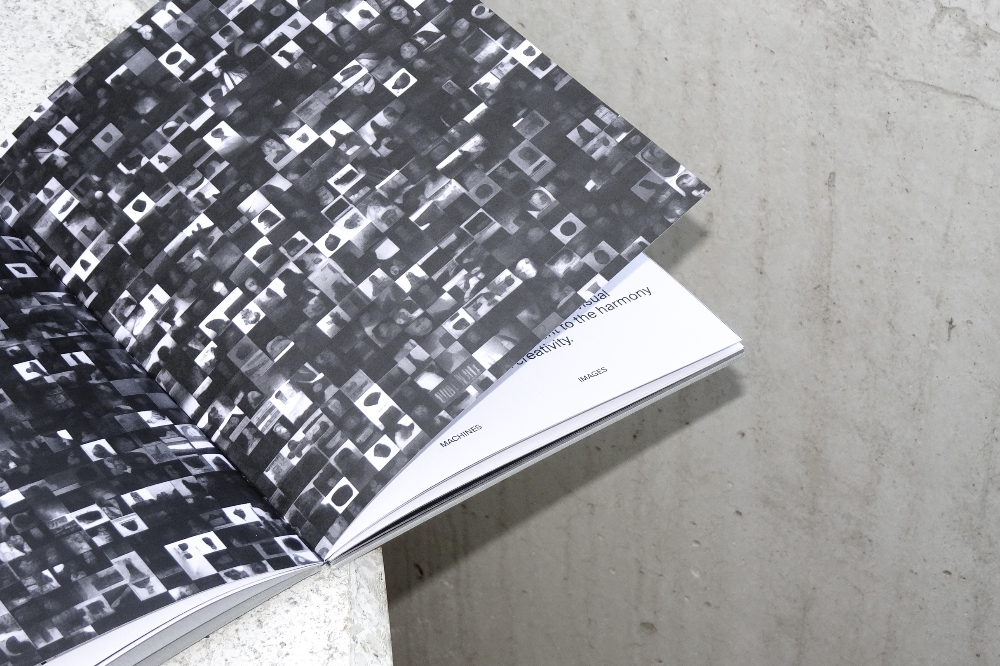
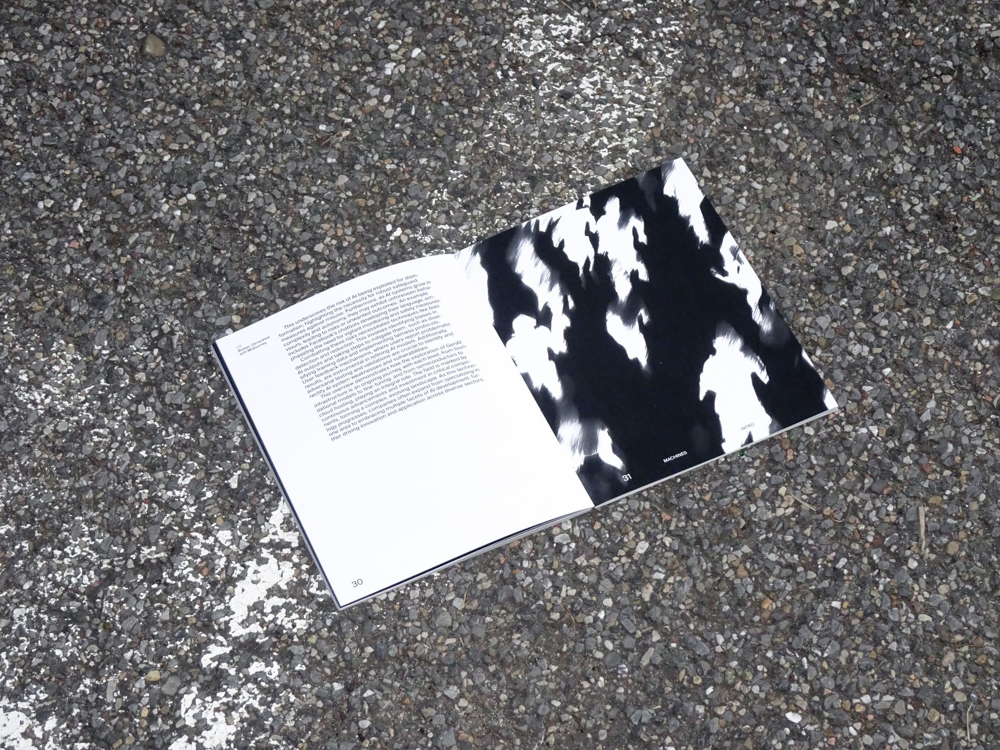
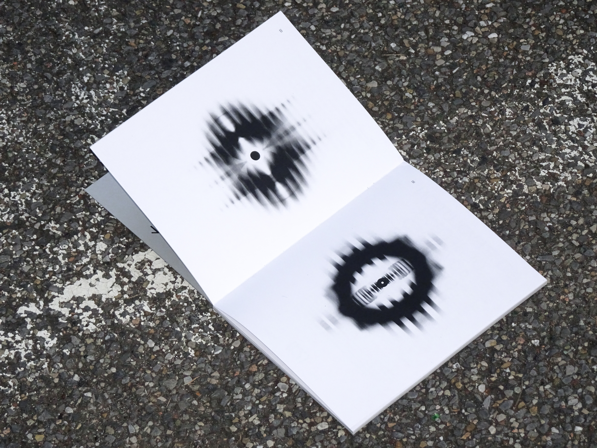

Inatto Magazine Issue n.1, The Right to Copy
Rights are not only those recognised by law. There are behaviours we all enact, that are shared even if considered unethical, and that is what legitimises them. Manipulating, destroying, failing, forgetting, copying. All of these are wrong, or is it our perception that they are? INATTO is a magazine written by creatives for creatives with the aim of opening a discussion on the needs of those who belong to the field. The magazine header works as a constitution while each issue of it is a new right, which is legitimised through the words of the people who have participated in its creation. The magazine presents itself as a place for dialogue between different points of view, with the aim of questioning those taboos that prevent the creative system from evolving. The right to copy is the first issue.
Link https://inattomag.it/index.html
Instagram @inatto.mag
Inatto Magazine Issue n.1,
The Right to Copy
Art direction, editorial design
2024
Souvenirs
"Souvenirs" is a celebration of memory and sharing, a journey through the emotions and bonds that unite us; a visual and physical tale. It is about a special evening, where five of these life stories intertwine around a table set in a cosy home; a dinner that took place on 25 September 2023. Five guests shared their memories and experiences related to five significant objects, one for each of them. A photographic zine where the images are laid out in a way that they complement and mingle with each other just like words in a conversation. But did this dinner really happen? Or is it just an illusion crafted by Artificial Intelligence?
Souvenirs
Art direction, editorial design
2024
Machines: Design & AI
"Machines: Design & AI" is a user manual made by graphic designers for graphic designers; a comprehensive guide to the multifaceted world of Artificial Intelligence and its integration into the field of design. A comprehensive guide to the conceptual foundations, historical evolution, structural complexities and functional dynamics of the transformative role of AI in graphic design. 10 editorials, 10 chapters, each with a thematic field, various applications of AI in it and the study of some of the main tools used.
Machines: Design & AI
Editorial design
2023
 







Vêtements
This poster series explores the unexpected visual harmony in everyday life. Each poster showcases photographs of people—whether friends, acquaintances, or strangers—who find themselves dressed alike in spontaneous, unplanned ways. These moments capture the beauty of coincidence, where individual choices align to create a shared aesthetic. The collection celebrates these fleeting connections and the charm of serendipity: even in the randomness of life, there is a hidden sense of coordination that can surprise and delight.
Vêtements
Art direction, photography
2023/2024
I.C.E. Insurge, Commit, Extinguish
“I.C.E. Insurge Commit Extinguish” is the narration of the thesis project carried out during the Final Synthesis Studio 2023/24 course. The project, speculative design themed, was created with the purpose of showing climate change from the perspective of a natural element. Within a scenario in which ice is tired of human abuse and sees its very existence threatened, it chooses to rebel. The ice terrorist association, I.C.E., acts against humanity to exterminate it and restore the long-lost balance on earth. I.C.E.’s bombs are everywhere and each is set to explode within minutes. Any attempt to get close accelerates the timer’s scrolling, bringing the bomb dangerously close to exploding. The only chance to stop the device is to touch its gelid surface. As soon as the contact ends, however, the time starts running again until it runs out. Getting stuck there is the only solution: wasting time to earn more time.
I.C.E. Insurge, Commit, Extinguish
Speculative, editorial design
2022/2023